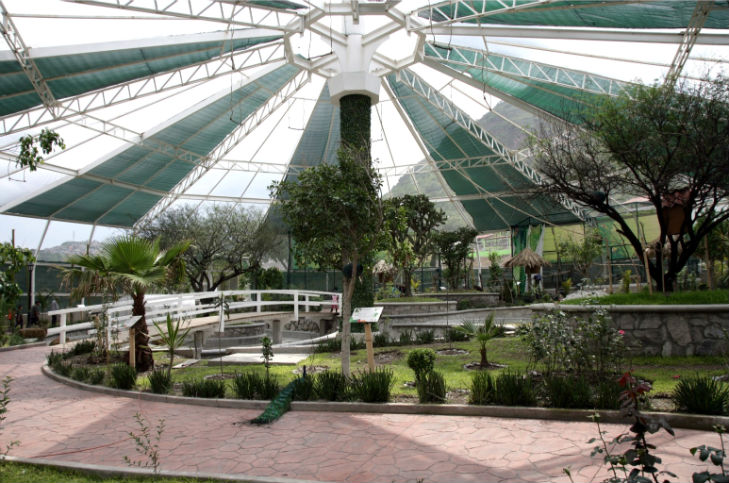
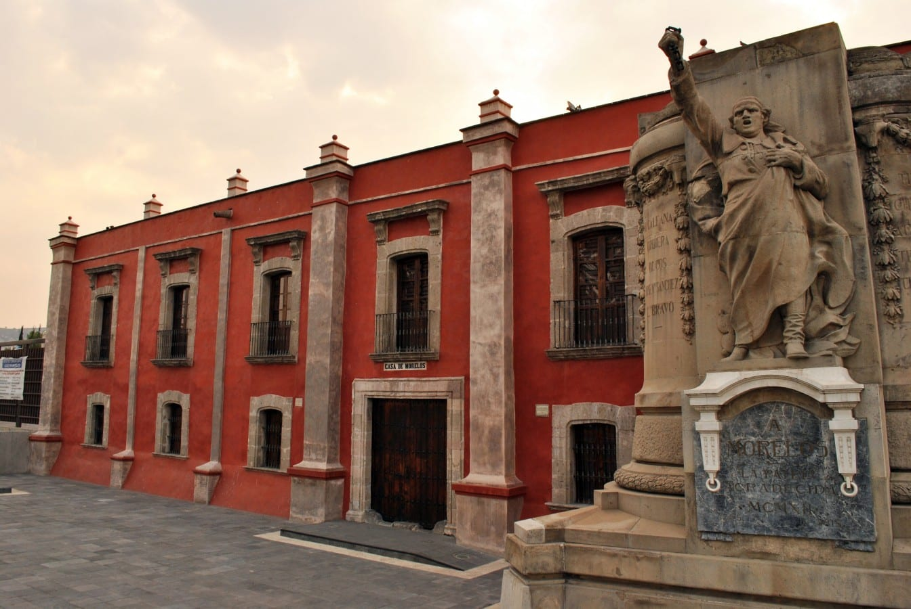

Experiencias en Ecatepec
Pirámide de Ehécatl-Quetzalcóatl

Descripción: La Pirámide de Ehécatl-Quetzalcóatl es un sitio arqueológico dedicado al dios del viento, Ehécatl, que data de la época prehispánica. Es uno de los pocos restos arqueológicos en Ecatepec y ofrece una vista al pasado mexica. Además, cuenta con un museo que exhibe piezas arqueológicas encontradas en la región.
Ubicación: San Cristóbal Ecatepec, Calle Pirámide, Ecatepec de Morelos, Estado de México.
Horarios: Martes a Domingo, de 9:00 a.m. a 5:00 p.m.
Costo: Entrada gratuita.
Parque Ecológico Ehécatl
Descripción: El Parque Ecológico Ehécatl es uno de los principales pulmones verdes de Ecatepec. Ofrece espacios para caminatas, ciclismo, y cuenta con áreas recreativas, juegos infantiles, y una laguna artificial. Es un lugar ideal para pasar un día al aire libre con la familia.
Ubicación: Avenida Insurgentes, San Cristóbal Centro, Ecatepec de Morelos, Estado de México.
Horarios: Lunes a Domingo, de 6:00 a.m. a 6:00 p.m.
Costo: Entrada gratuita.
Casa de Morelos
Descripción: La Casa de Morelos es un museo histórico ubicado en la que fue la prisión y lugar de ejecución de José María Morelos y Pavón, uno de los héroes de la Independencia de México. El museo cuenta con exposiciones sobre la vida de Morelos y la lucha por la independencia.
Ubicación: Avenida Morelos S/N, San Cristóbal Ecatepec, Ecatepec de Morelos, Estado de México.
Horarios: Martes a Domingo, de 9:00 a.m. a 5:00 p.m.
Costo: $10 MXN.